คทาลูกสน คทาลูกสน | 1 | 42 | ไม่มีธาตุ | ตอไม้ผี 0.25% |
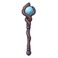 คทาผลึกจันทรา | 1 | 39 | ไม่มีธาตุ | อาวุธเริ่มต้นของสาย (ได้ตอนเปลี่ยนอาชีพ) |
 คทาไม้ตักน้ำผึ้ง คทาไม้ตักน้ำผึ้ง | 4 | 43 | ไม่มีธาตุ | สไลม์น้ำผึ้ง 0.25% |
 คทาไม้ปิ้งมาร์ชเมลโลว์ คทาไม้ปิ้งมาร์ชเมลโลว์ | 6 | 38 | ไฟ | แม่มดเทียนไข 0.06% |
 คทางาหมูป่า คทางาหมูป่า | 8 | 43 | ไม่มีธาตุ | หมูป่าเขี้ยวตัน ร่างเขาเงิน 0.25% |
 คทาปุยแดนดิไลออน คทาปุยแดนดิไลออน | 8 | 40 | ลม | ภูตปุยแดนดิไลออน ร่างปุยชมพู 0.24% |
 คทาสไลม์น้ำใส คทาสไลม์น้ำใส | 11 | 40 | น้ำ | สไลม์น้ำใส 0.12% |
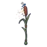 คทาดอกกกปุยลม | 15 | 40 | ลม | หิ่งห้อยหมอยา 0.12% |
 คทาหุ่นไล่กาผีสิง คทาหุ่นไล่กาผีสิง | 18 | 38 | วิญญาณ | หุ่นไล่กาผีสิง 0.06% |
 คทาราชาค้างคาว คทาราชาค้างคาว | 22 | 52 | มืด | ราตรีราชาค้างคาว 0.5% |
 คทาควอตซ์ทองเหลือง คทาควอตซ์ทองเหลือง | 26 | 70 | ไม่มีธาตุ | หมาป่าหิมะ 0.25% |
 คทาเขาแกะเมฆ คทาเขาแกะเมฆ | 29 | 68 | ไม่มีธาตุ | แกะเมฆเขาม้วน 0.25% |
 คทาหมาป่าหอนจันทร์ คทาหมาป่าหอนจันทร์ | 31 | 63 | ไม่มีธาตุ | หมาป่าเงาจันทร์ 0.12% |
 คทาถ่านคุ คทาถ่านคุ | 33 | 69 | ไฟ | สไลม์ลาวา 0.25% |
 คทาตอไม้ผี คทาตอไม้ผี | 35 | 63 | ดิน | ยามด่านเกลือ 0.12% |
 คทาป้ายหลุมศพ คทาป้ายหลุมศพ | 37 | 63 | วิญญาณ | ป้ายหลุมศพผีสิง 0.12% |
 คทาเมฆฝน คทาเมฆฝน | 39 | 60 | น้ำ | ภูตละอองน้ำ 0.06% |
 คทานาฬิกาทราย คทานาฬิกาทราย | 41 | 63 | ไม่มีธาตุ | ผีพายุทราย 0.12% |
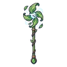 คทากังหันลม | 43 | 60 | ลม | ทากพิษแตกตัว 0.06% |
 คทาราชาเห็ดเรืองแสง คทาราชาเห็ดเรืองแสง | 44 | 82 | พิษ | ราชาเห็ดเรืองแสง 0.5% |
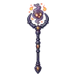 คทาภูตเถ้าถ่าน | 46 | 60 | ไฟ | แมงป่องยิงพิษ 0.06% |
 ไม้เท้าเห็ดราก ไม้เท้าเห็ดราก | 48 | 90 | พิษ | บอสผู้ถูกรากสิง |
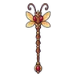 คทานางพญามด | 48 | 82 | ไม่มีธาตุ | รังนางพญามด 0.5% |
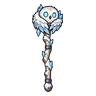 คทานกฮูกหิมะ | 51 | 91 | น้ำ | นกฮูกหิมะ ร่างแสงเหนือ 0.5% |
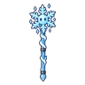 คทาภูตเกล็ดน้ำแข็ง | 51 | 83 | น้ำ | ภูตเกล็ดน้ำแข็ง 0.06% |
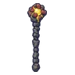 คทากำปั้นโกเลม | 52 | 97 | ดิน | นกฮูกหิน ร่างดาว 0.25% |
 คทาคางคกพิษ คทาคางคกพิษ | 54 | 86 | พิษ | คางคกพิษ 0.12% |
 คทาอเมทิสต์เงิน คทาอเมทิสต์เงิน | 57 | 92 | ไม่มีธาตุ | หนังสือบิน ร่างปกทอง 0.25% |
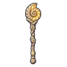 คทาฟอสซิลหอยงวง | 59 | 86 | ไม่มีธาตุ | อิมป์เปลวไฟ ร่างไฟฟ้า 0.12% |
 คทาผลึกน้ำแข็งรากดำ คทาผลึกน้ำแข็งรากดำ | 60 | 95 | น้ำ | บอสผู้ถูกรากสิง |
 คทาซุปเย็นชืด คทาซุปเย็นชืด | 60 | 86 | พิษ | สไลม์ซุปเย็นชืด ร่างซุปพริก 0.24% |
 คทาภูตหมอกเงา คทาภูตหมอกเงา | 61 | 83 | มืด | ภูตหมอกเงา 0.06% |
 คทาปะการังมุก คทาปะการังมุก | 63 | 86 | น้ำ | พลีซิโอซอร์ 0.12% |
 คทากุญแจโบราณ คทากุญแจโบราณ | 67 | 86 | ไม่มีธาตุ | ทากพิษแตกตัว 0.12% |
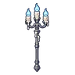 คทาเชิงเทียนวิญญาณ | 69 | 83 | วิญญาณ | วิญญาณเทียน 0.06% |
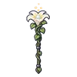 คทาดอกไม้ราตรี | 72 | 83 | ศักดิ์สิทธิ์ | ผลึกดาวมีชีวิต 0.06% |
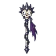 คทาราชาสุสาน | 74 | 113 | มืด | บัลลังก์ราชาสุสาน 0.5% |
 คทาหัวใจพงไพร คทาหัวใจพงไพร | 77 | 115 | ดิน | ต้นไม้ยักษ์โบราณ 0.25% |
 คทาดาวหาง คทาดาวหาง | 79 | 105 | ศักดิ์สิทธิ์ | ผลึกดาวมีชีวิต 0.06% |
 คทาแมวดำราตรี คทาแมวดำราตรี | 80 | 109 | มืด | ผู้จุดตะเกียงกลวง 0.12% |
 คทาวงโคจรทองคำ คทาวงโคจรทองคำ | 83 | 119 | ไม่มีธาตุ | ผู้จุดตะเกียงรุ่นแรก ร่างทอง 0.25% |
 คทากะโหลกแร็พเตอร์ คทากะโหลกแร็พเตอร์ | 85 | 109 | ไม่มีธาตุ | แร็พเตอร์ใบไม้ 0.12% |
 คทาผู้ประกาศต้นไม้ คทาผู้ประกาศต้นไม้ | 86 | 105 | มืด | ผู้ประกาศต้นไม้ 0.06% |
 คทาแสงเหนือ คทาแสงเหนือ | 87 | 105 | น้ำ | พลีซิโอซอร์ 0.06% |
 คทาเบ้าหลอม คทาเบ้าหลอม | 88 | 115 | ไฟ | อิมป์พ่นลาวา 0.25% |
 คทาเกลียวแอมโมไนต์ คทาเกลียวแอมโมไนต์ | 88 | 105 | น้ำ | แอมโมไนต์คลาน ร่างลายม่วง 0.12% |
 คทากลุ่มดาวหมี คทากลุ่มดาวหมี | 91 | 105 | ไม่มีธาตุ | ทากพิษแตกตัว 0.06% |
 คทาผีคนปัดปล่องไฟ คทาผีคนปัดปล่องไฟ | 92 | 109 | มืด | ผีคนปัดปล่องไฟ ร่างเขม่าม่วง 0.24% |
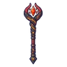 คทามังกรลาวา | 94 | 143 | ไฟ | หัวใจมังกรลาวา 0.5% |
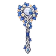 คทาพฤกษาจันทร์เพ็ญ | 99 | 155 | ดิน | ดรอปทั่วโลก Lv 90+ |